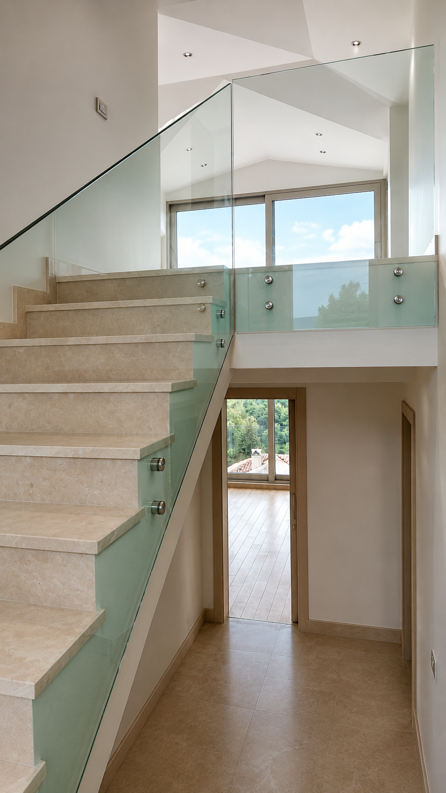

Merdiven, Balkon ve Teras İçin Kusursuz Mimari Detaylar, Ödün Vermeyen Güvenlik.
FİYAT TEKLİFİ ALMekanlarınıza değer katın. Çağdaş Pro Yapı küpeşte ve korkuluk sistemleri; balkon, teras, merdiven ve havuz kenarlarında maksimum güvenlik sağlarken, minimalist ve şık tasarımlarıyla mimarinizin ayrılmaz bir parçası olur. Alüminyum, paslanmaz çelik ve temperli camın kusursuz birleşimiyle üretilen sistemlerimiz, hem iç hem dış mekanlarda prestijli bir görünüm sunar.
Aşırı hava koşullarına dayanıklı, 304 ve 316 kalite paslanmaz çelik profiller ile korozyona karşı tam koruma. Uzun ömürlü ve sağlam yapı.
Temperli ve lamine güvenlik camları kullanılarak tasarlanan şeffaf korkuluklar ile manzaranızı bölmeden mekanlarınıza derinlik ve ferahlık katın.
Hafifliği ve esnekliği ile öne çıkan, mimari detaylara uygun tasarlanabilen alüminyum profil sistemleri. Geniş renk yelpazesi ve eloksal yüzey seçenekleri.
Her yapı benzersizdir ve kendi karakterini yansıtacak detaylara ihtiyaç duyar. Çağdaş Pro Yapı olarak, standart ölçülerin ötesinde projenizin mimari gereksinimlerine uygun, özel üretim küpeşte sistemleri tasarlıyoruz. Kavisli balkonlar, döner merdivenler veya galeri boşlukları için statik dayanımı yüksek, estetik ve yenilikçi çözümler üretiyoruz.
Alüminyum küpeştelerinizde statik toz boya ile yüzlerce farklı renk seçeneği veya eloksal kaplama ile mat, parlak, bronz gibi metalik görünümler elde edebilirsiniz. Cam korkuluklarda ise şeffaf, füme, bronz ve mavi renkli cam seçenekleriyle mekanınızın atmosferini dilediğiniz gibi yönlendirin.
Küpeşte ve korkuluk sistemlerinde malzemenin kalitesi kadar montajın da hassasiyeti kritik önem taşır. Uzman teknik ekibimiz, en karmaşık mimari detaylarda dahi milimetrik hesaplamalarla hatasız ve sağlam kurulumlar gerçekleştirir. Gizli bağlantı aparatları ve epoksi sabitleme yöntemleriyle sallantı ve gevşeme sorunları tamamen ortadan kaldırılır.

Rüzgar dayanımı yüksek, dış mekana uyumlu cam ve paslanmaz çelik balkon sistemleri.
İç ve dış mekan merdivenleri için estetik tutamaklar, güvenli ve şık dönüş detayları.
Dar cephe boşluklarında maksimum güvenlik ve estetik sağlayan modern cam korkuluklar.
Su ve neme karşı ekstra dirençli, güvenli ve kesintisiz görüş sağlayan cam sistemler.
Villa ve iş merkezlerinin iç mekan galeri boşlukları için lüks görünümlü cam uygulamalar.
Engelli rampaları ve yaya geçitleri için uluslararası standartlara uygun sağlam küpeşteler.
Tüm korkuluk ve küpeşte sistemlerimiz; uluslararası statik ve rüzgar yükü hesaplamalarına uygun olarak, ailenizin ve ziyaretçilerinizin güvenliğini maksimize edecek şekilde üretilir ve monte edilir.
Mekanınızın tüm kavis ve detaylarına uygun kusursuz tasarımlar.
Mühendislik hesapları yapılmış, esnemeyen ve sarsılmayan rijit bağlantılar.
Korozyona dayanıklı eloksal, elektrostatik boya ve parlak paslanmaz yüzeyler.
"Villamızın merdiven ve galeri boşluklarına yapılan cam küpeşteler tek kelimeyle muazzam oldu. Evin tüm havası değişti, çok daha geniş ve lüks görünüyor."
"Fransız balkonlarımız için paslanmaz detaylı sistemler yapıldı. Gerek malzeme kalitesi gerekse ekibin titiz işçiliği harikaydı. Çok sağlam ve güven veriyor."